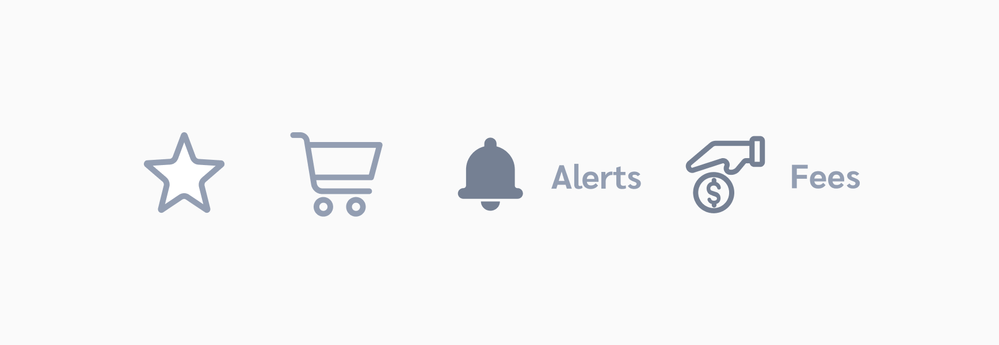

Icon
An icon is a graphical representation of meaning and can be used for drawing an attention to specific actions.
Overview
Icons add simple visual context so users can understand the context at a glance. They can help clarify a feature’s main purpose or draw attention to a commonly understood action.
Remember that while visual cues like icons can help many people process the message, not everyone will interpret what the icon means the same so labels should be used, especially for the bottom navigation.
Usage
Wealth Magik icons are simple and informative and should be consistent in style (detail design, perspective, stroke weight, etc.)
1. Stroke Weight
Consistent stroke weight is the key to maintaining the visual unity of the entire icon system.
DO
DON'T
2. Perspective
Always keep a simple, flat style. Icons should not have a sense of depth nor a large amount of detail.
DO
DON'T
3. Simple over detailed
Detailed icons increase cognitive load. Focus on simplicity to help users understand what the icon represent and recognize the icon on smaller screens
DO
DON'T
4. Literal over abstract
Literal symbols are easier to understand than abstract symbols. Whenever possible, use symbols that represent the most basic idea or concept instead of a metaphorical one.
DO
DON'T
5. Professional Over Fun
The design of an icon assists in communicating tone, much like the content it’s paired with. Focus on the effectiveness of the message instead of its ability to delight. In other words, prioritize representing the function, rather than how nice it looks.